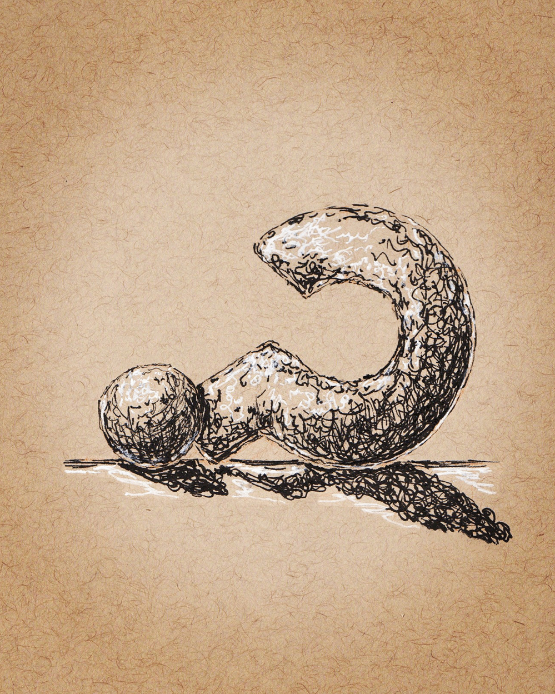
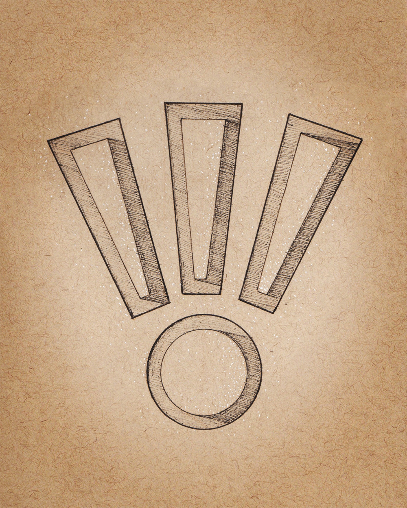
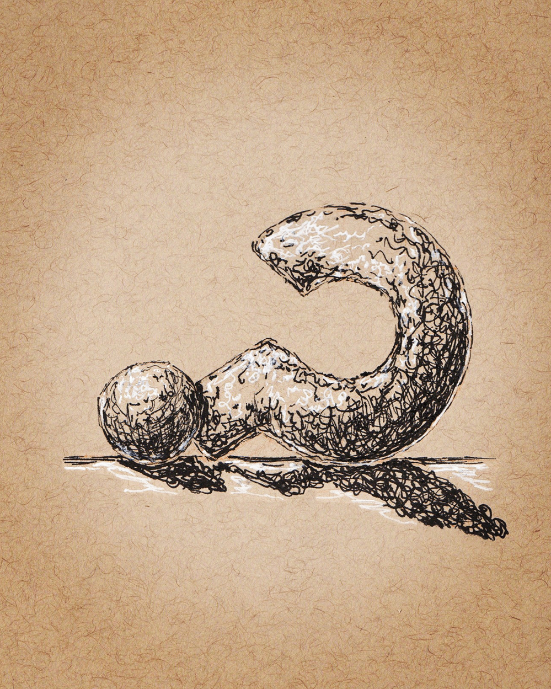
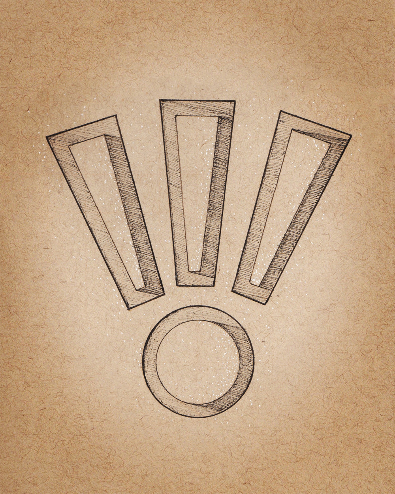

INSTAGRAM SERIES
ALPHABET PROJECT
ALPHABET PROJECT
Illustrations
Feb 2019 | Personal Project | Ink and Paper
CONCEPT
As a practice in illustration, I decided to create and post a letter a day on Instagram using only black and white ink on tan-toned paper. Each image started with a grid, and from there I worked out a new style, trying not to repeat any in the process. Because there are 28 days in February, I added two punctuation marks to the series.


 



ANIMAL BASEBALL LEAGUE (ABL)
Four of the best players in the ABL, Sam Geraldino, Shep Barbary, Ted Haney and Daisy London are “must-haves” for any roster or card collection.